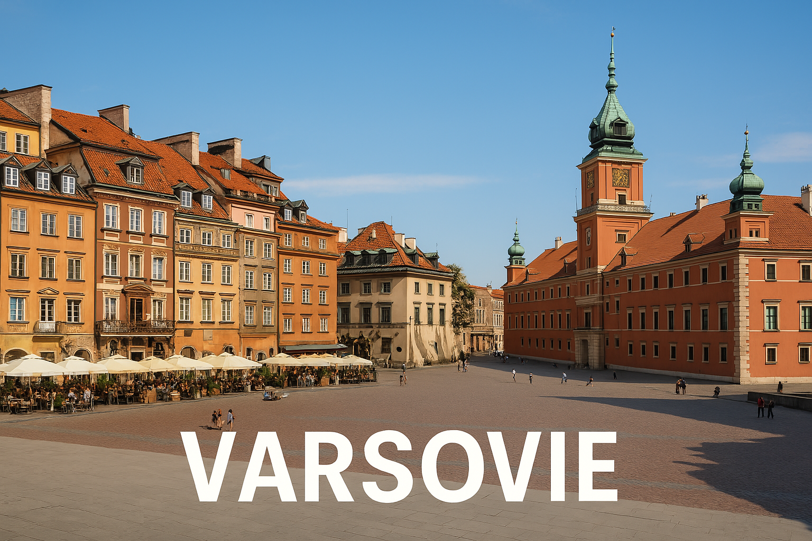

Varsovie est la capitale de la Pologne, reconstruite après la guerre et pleine de vie culturelle.
Le symbole de Varsovie est une sirène guerrière appelée Syrenka, présente sur le blason de la ville ! 🧜‍♀️
Quel fleuve traverse Varsovie ?